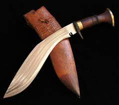
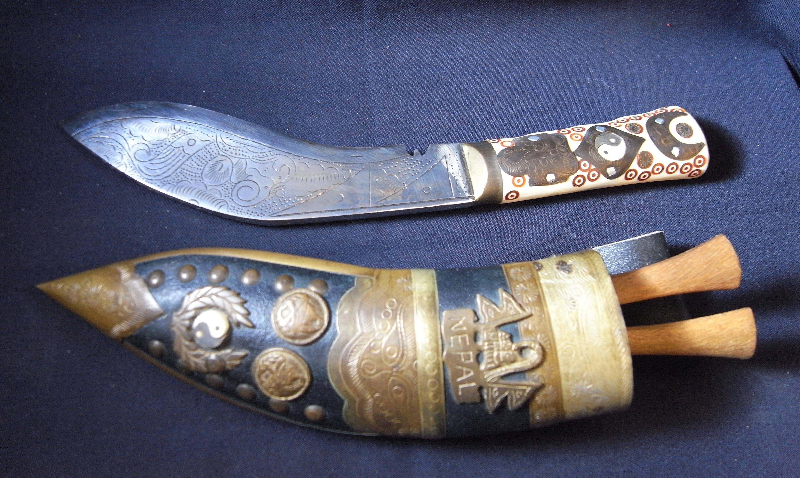
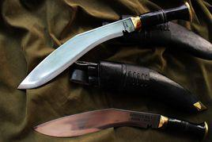
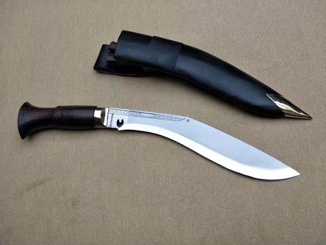
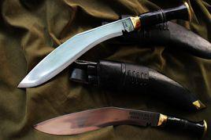
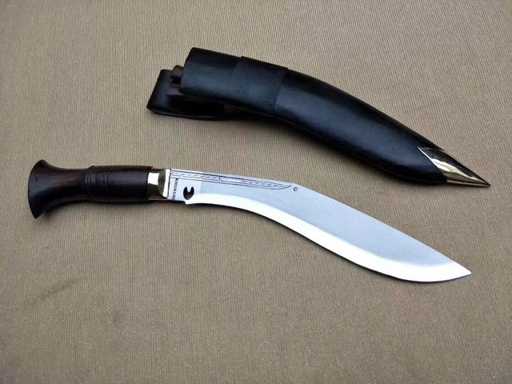

彎刀傳奇
廓爾喀刀（尼泊爾語：खुकुरी，Khukurī），或稱庫克力彎刀、庫克力反曲刀，尼泊爾人將其用於戰場上戰鬥，是尼泊爾的國刀。當士兵獲得戰功後會被賜予一把刻上了其名字的廓爾喀刀。是廓爾喀日常生活時都會佩戴在身並用於切割物件的工具，也是每個尼泊爾家庭不可缺少的東西。雖然大多數人都是在軍隊中使用廓爾喀刀，但廓爾喀刀是尼泊爾田野和家庭中最常用的多用途工具，它的用途各不相同，包括建築，清理，砍柴，挖掘，屠宰動物作為食物，切割肉類和蔬菜，剝動物皮和打開罐頭。當槍械故障不能發射或是子彈用盡時，尼泊爾人便會拔出廓爾喀刀跟敵軍作戰，因此是廓爾喀士兵的象徵。
 
 
 